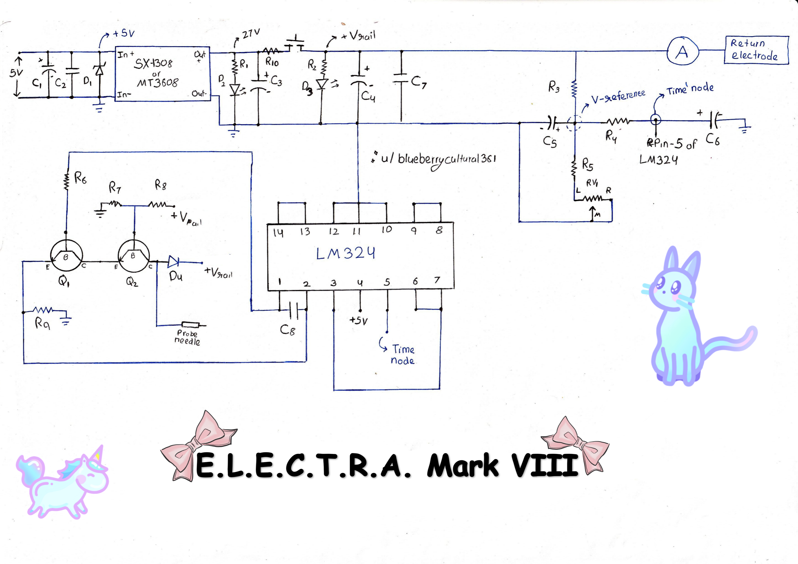

📊 Built-in ammeter
Instead of relying on an external one.
DIY Electronics Project
A simple, current-limited galvanic electrolysis machine — built from common parts, iterated eight times, and documented honestly.

Art on the front page by u/artgurlroxy ✨
Section 01
The people who made this possible.
This document has the eighth iteration of my (galvanic) electrolysis hair removal machine, which I've named E.L.E.C.T.R.A. Mark VIII. I created this machine after failing to replicate the electrolysis machine created by u/abbxrdy. After spending days trying to make it work, I scrapped the idea and started from scratch — with a single goal in mind: make the simplest current-limited galvanic electrolysis machine. And after seven iterations, here we are. This is the latest iteration, the safest and most gentle yet ^^
I started with a really basic design, then with every iteration improved it bit by bit — making it safer, gentler, and thoroughly testing it. And I wanted to share it with the community for anyone who has the drive to recreate it :)
I'd like to thank my pals Bhanu and Abee, who really supported me in the making of this machine. I'm grateful for their support along the way :)
And also I'd like to extend my gratitude to everyone who gave feedback and commented on the Mark VI's posts of this machine 🫶✨ A few specific people I'd like to thank are:
Section 02
The plain-English version, then the actual chemistry.
It's a simple DC current device that uses galvanic electrolysis to remove hair permanently. We build it from common electronic parts. No soldering required if we use a breadboard.
As far as my research goes regarding its history — which didn't go very far — the first time galvanic electrolysis was reported in medical literature was in 1875 by an ophthalmologist, for removing ingrown eyelashes. So yeah, pretty old, but one of the most effective hair removal methods. Though in my opinion, Blend and thermolysis are THE BEST ^^
A small direct current (0.1 to 1 mA) passes through a fine needle (cathode) inserted into the hair follicle, and returns into a pad (anode) held on the skin near the treatment site. The current creates a tiny amount of lye (NaOH) inside the follicle, which destroys the hair follicle.
Both formed at the needle. The H₂O and Na⁺ come from the tissue themselves!
So it's pretty simple. People have hair they want to get rid of. Electrolysis does that — but permanently ✨
Imagine each hair as a plant growing from a pot. We destroy/damage that pot, so the plant that is the hair can never grow back ^^ ✨
Section 03
For India. Prices in ₹.
Note: Cost estimation based on the fact that I got most of these components from a local shop near me IRL! I bought the 5KE6.8A diode and the SX1308 from Robu online.
| Item | Cost (₹) |
|---|---|
| Resistors and potentiometers | 60 |
| Capacitors | 30–50 |
| Transistors | 10 |
| LM324 | 15 |
| LED | 10 |
| SX-1308 | 40 |
| 1N4148 diode | 5–10 |
| P6KE6.8A or 5KE6.8A | 30 |
| Multimeter | 150 |
| Full-size breadboard | 70 |
| Jumper wires | 40–100 |
| Connecting wires | 10–30 |
| Footswitch | Depends :3 |
| All non-electrical components | <50 |
| Enclosure + sacrificial USB cable | Assume free |
Total cost estimate → ₹500 to ₹600 (<$7 USD)
Just buy 22 to 23 AWG connecting wires in place of jumper wires and connecting wires.
Because it's not impossible to kill them. I killed three myself! The first died after I accidentally shorted the XL-6009 output during testing Mark VI. The second died when I accidentally shorted +5V input and the electrolysis needle output in Mark VII. The third died when I was iterating Mark VIII.
Make sure to confirm the pinout of the transistors. Mine 2N2222 flat side were EBC, but I can't guarantee that for every similar NPN transistor and every 2N2222 that they will have the same pinout.
Section 04
Please check the attached images of each component to get an idea!
Any capable multimeter!
I used 5% tolerance ones, though 1% tolerance would be better! All of my resistors are 1/4W, though I do recommend using 1/2W resistors wherever I've mentioned.
| Ref | Value | Color code | Notes |
|---|---|---|---|
| R1, R9 | 1.5 kΩ | 🟫🟩🟥 | 1/2W at least |
| R3 | 75 kΩ | 🟪🟩🟧 | Or 68k + 7.2k in series |
| R5 | 500 Ω | 🟩⬛🟫 | — |
| R4, R8 | 56 kΩ (×2) | 🟩🟦🟧 | — |
| R6 | 10 kΩ | 🟫⬛🟧 | — |
| R7 | 13 kΩ | 🟫🟧🟧 | Or 12k + 1k in series |
| R2 | 1 kΩ | 🟫⬛🟥 | 1/2W at least |
| R10 | 270 Ω | 🟥🟪🟫 | 1/2W at least |
| RV1 (Pot-1) | 5 kΩ linear pot | — | Multiturn would be best, though not necessary |
| Ref | Value | Type | Notes |
|---|---|---|---|
| C2, C7, C8 | 0.1 µF | Ceramic | 100 nF, ceramic code 104 |
| C5, C6 | 22 µF (×2) | Electrolytic | Rated ≥35V |
| C3, C4 | 1000 µF (×2) | Electrolytic | Rated ≥35V |
| C1 | 1000 µF | Electrolytic | Rated ≥10V |
| Item | Detail |
|---|---|
| Q1, Q2 | Two 2N2222 or two 2N3904 NPN transistors |
| IC | LM324 |
| D2, D3 | D3 = red LED (required). D2 = any color (I picked white :3) |
| D1 | P6KE6.8A or 5KE6.8A (TVS diode) |
| D4 | 1N4148 diode |
| Step-up module | SX-1308 or MT3608 (I used SX-1308) |
| Ammeter | Capable of measuring 0.1 mA (0.0001 A). A DT830D-based cheap multimeter works |
| Breadboard | Full-size (like GL-2). Half-size also possible. Perfboard / custom PCB also fine! |
| Jumper wires | A few |
| Solid wires | 22 AWG solid core, thick insulated copper, or steel binding wire |
| Sacrificial USB cable | Any cheap USB cable will work!! |
| Footswitch | Literally any switch you can press with a foot. I used a basic cheap push switch. |
Don't use XL-6009 as the step-up module.
| Item | Detail |
|---|---|
| Bolts | 5 bolts + 10 nuts + 30 washers (for contact points / ports) |
| Plastic knobs | For the pots! |
| Enclosure | Anything that fits a full-sized breadboard and is sturdy enough. I used a smartphone box (Redmi 9a — it had a big box) |
| Essential | A queer sticker for powering the device (/j) |
Section 05
Follow in order. Don't skip ahead.
Set the SX-1308 to output 27V by turning the small potentiometer screw on the board.
For RV1, knob facing you: Left, Middle, Right.
Section 06
The full circuit diagram.

Section 07
In one word: magic
E.L.E.C.T.R.A. Mark VIII is a current-limited galvanic electrolysis machine. It simply delivers a set adjustable current through the hair follicle, and dynamically adjusts the output voltage to deliver the set current. Here's how each part makes that happen.
The LM324 is a quad op-amp. In this circuit, it does two things:
When we press the footswitch, we don't want the output current to reach the set current instantly, because that would cause unnecessary sharp pain — the rate of change in current affects pain felt. So one section of the LM324 (U1B) acts as a buffer. Current ramps up gently over about 3–6 seconds instead of hitting all at once :3
The other section (U1A) compares two voltages and, with that, keeps check on these two currents:
If the actual current is too low, U1A increases its output. If it's too high, U1A decreases its output. It does this continuously, thousands of times per second, keeping the current locked to the setting.
The LM324 controls the current by controlling the transistors, which we can think of as valves through which the actual current flows. The circuit works with a single transistor, though a second transistor eliminates the risk of a single-point-failure state of the transistor failing. Hence it makes the circuit safer!
It is directly controlled by the LM324. Its emitter is connected to the sense resistor (R9). When the LM324 tells Q1 to conduct more, Q1 allows more current to flow through the load. When it tells Q1 to conduct less, Q1 chokes off the current. (Just like a valve controlling the flow of water!)
This is the failsafe transistor, and makes the whole thing more precise and stable!
R9 (1.5 kΩ) sits between Q1's emitter and ground. All load current flows through it.
Ohm's law says: V = I × R. So the voltage across R9 tells us exactly how much current is flowing. If 0.5 mA flows through R9, the voltage across it is 0.75V.
The LM324 reads this voltage and compares it to the setpoint. If they don't match, it adjusts Q1 until they do.
This is the heart of the feedback loop!!
Pot-1 (5 kΩ) sets the reference voltage. Turning the knob changes the voltage that the LM324 tries to match across R9.
That's it. One knob, full control over current ✨
The SX-1308 takes 5V from USB and boosts it to 27V. Why 27V? Because we need enough voltage to push current through the skin, which can have quite high resistance.
Though you can use any voltage range between 24 to 30V. Though SX-1308 output voltage affects the current range of the machine, so be sure of that! The maximum voltage I would recommend is 30V. As I honestly don't see a point beyond even 27V.
Mark I to Mark VI did have 30V power rails instead. And Mark VII had 24V power.
These parts aren't strictly necessary, but they make the machine safer and let me sleep peacefully at night when I'll publish it.
The LM324 compares what we want to what we are getting, the transistors deliver it, the sense resistor measures it, and the potentiometer lets us adjust. All of it is powered by a 5V mains-isolated USB power source, which is stepped up to 27V. With safety measures in place.
Section 08
Numbers from my actual build.
| Parameter | Value | Notes |
|---|---|---|
| SX-1308 input | 5V mains-isolated USB source | Momentarily sags to 3V every time footswitch is pressed |
| SX-1308 output | 27V (26.8V) | 26.8V instead of 27V because my SX-1308's pot sucks — literally cannot set it to exact 27V |
| Current range | 0.1 mA – 1.08 mA | — |
| Max output voltage | 24.2 V | — |
| Max avg. current from USB | ≈290 mA | Measured |
| Max avg. current from SX-1308 | ≈42 mA | Measured |
| Max avg. power from USB | ≈1.45 W | — |
| Max avg. power from SX-1308 | ≈1.13 W | — |
| SX-1308 efficiency at max power | ≈78% | Calculated |
Note: maximum values of current are measured with a test load of zero ohm.
Measured with a 12 kΩ load.
| Current | 90% | 95% | 99% | Ramp down |
|---|---|---|---|---|
| 0.1 mA | 3.6 s | 4.7 s | 8.26 s | 2.96 s |
| 0.3 mA | 3.4 s | 4.3 s | 6.3 s | 2.4 s |
| 0.6 mA | 3.55 s | 4.55 s | 6.55 s | 1.9 s |
| 1 mA | 3.9 s | 4.8 s | 7 s | 1.7 s |
Note: these ramp-up and ramp-down times are not highly accurate. I measured them by video recording my multimeter's readings, then reviewing and noting down readings. I took three readings for each number and reported the average. The inaccuracies come from my multimeter being a bit slow, the video being recorded at 30fps, and basic human error.
These are numbers from what I assembled — I didn't use exact resistor values as given, because I couldn't find a few resistors! And all of my resistors have a tolerance of 5%.
Section 09
Do these tests in this order.
Make sure all the components are secure, especially if you've built on a breadboard.
Make sure the polarity of the electrolytic capacitors is correct. I've heard they can literally pop if connected wrong.
Make sure the polarity of all the diodes is correct.
Check with multimeter on continuity mode that all components are connected correctly. At minimum, check that the power rails are not shorted and that everything that should be connected to power rails is connected. Re-check against the instructions.
After all this, if everything seems alright, now we can get electrons involved properly. Connect the USB input to a power bank or any other 5V USB source that is completely isolated from mains.
We'll use a jumper wire (our zero-ohm resistor), a 1k, and a 12k Ω resistor to test the machine across different current ranges.
Connect each test resistor to one lead of the ammeter, and the other lead to one of the output electrodes of the machine, then connect the second lead of the ammeter to the remaining output electrode. The ammeter and resistor should be in series across both output electrode terminals of the machine.
Measure the minimum and maximum current for each test resistor, along with rough ramp-up and ramp-down times. If the machine is working correctly, the values you get should roughly align with those in the Specifications section.
Section 10
Start low. Really low.
The main thing is units of lye. Figure out how many units of lye you need for the specific group of hair you're treating, then use this formula based on your preference:
In my opinion, 0.3 mA is a good starting point, especially for body hair. And 0.7 mA is the maximum current I've used — for 30±5 seconds, and only on my testosterone-based facial hair.
Though I have used current as high as 1 mA on my body hair just for science — it came with extra pain but sub-ten-second treatment time (FOR BODY HAIR). Though yeah, I definitely do not recommend that.
A formula cannot feel your skin. Start at the lowest setting and work up. If it stings sharply, if the skin blanches white, or if you see a mark forming — stop, turn it down, and let the area rest.
Section 11
What went wrong, and why.
If any of the following happens — resistors start burning, LM324 gets hot after 10–15 seconds, capacitors swell up, or SX-1308 heats up — then this indicates there's a fault in the connections, most probably a short, and components may have gotten damaged.
Check the current flowing through its pin 4. If it's ≈32.5 mA, that means the great quad op-amp has fallen — the LM324 is dead. Something killed it: a wrong connection, a transient voltage spike, a subatomic particle, or who knows what.
Usually means you connected the capacitor incorrectly. Be glad it didn't blow up (yet).
Disconnect power and use the multimeter in continuity mode to check that everything is connected properly.
That may be a sign that the pot isn't connected properly.
If you've built on a breadboard, loose connections will haunt you until you tighten them somehow. When I first assembled Mark VIII, it didn't output any current. I spent half an hour figuring out what was wrong. At last, I took out the transistors to check if they were damaged (they weren't), re-inserted them, and the machine came to life.
Section 12
If you're using it on yourself, you're on your own risk :3
After all the tests, if the machine is behaving correctly, you may use it on yourself. Below is the ideal way to do it — even though I use it really non-ideally (I use a DIY probe holder, a DIY electrolysis needle, and a dog tag as the return electrode). So yeah, don't do what I'm doing — here's the ideal way you should use it!
Apply a mild antiseptic or soothing aftercare. There are plenty of videos on YouTube about that. I just use ice/cold water right afterwards and a gentle cleanser later on.
Section 13
The honest version.
My experience has been like this:
I treated 60+ hairs. I didn't know how to insert the needle properly — it didn't help that I make and use my own needles. So I literally stabbed my skin the first couple of times. It hurt like hell when I was stabbing myself like that, though I learnt. But the needle still stung because Mark VI had no significant current ramp up or ramp down.
Treated quite a few body hairs. At 0.3 mA with proper insertion, treating body hair was almost painless. And then I finally treated four testosterone-based facial hairs, from above my lip area! And the healing was smooth — I literally couldn't notice any significant signs of electrolysis ^^
Treated 38 body hairs on my other knee!
I'm broke. I'll say it.
Somehow affording my HRT from the money I could save up that my parents give me. And well, I have enough saved up to afford it for months to come! It helps financially that I take my estrogen in the form of estradiol stickies.
And well, like most transfemmes, I hate my testosterone-based facial hair. It grows so fast, shaving it is a chore, and there's still beard shadow left. So this made the most financial sense to me!
I can't afford laser or professional electrolysis. IPL is magnitudes more expensive than what I spend on my electrolysis machine — even though I spent a bit more because of having to literally iterate it from scratch. It would be slow, treating my facial hair. But it's something :))
Every hair I get rid of is a hair less that makes me feel not to look for too long in the mirror.
And seeing electrolysis machines made by other people — and then successfully treating themselves — gave me hope. And because of that hope, I'm here with a functioning electrolysis machine on my desk, four less hairs on my face, and a satisfaction inside :)
Section 14
Eight iterations, documented.
Bare bones. No safety measures. Single transistor. No current ramp up or ramp down. Current range too high. High leakage current.
Added a second transistor.
Added a few capacitors for slow ramp up (it wasn't significant, tbh).
Changed footswitch position, and fixed leakage current issue.
Fixed the current ranges and better arrangement.
First iteration I used on myself. 30V power rail. No significant current ramp up or ramp down. No safety diodes.
Added current ramp up & ramp down. TVS protection planned. Reduced power rail to 24V. Flyback diode. Better filtering. Added output indicator LED. New current range and better documentation.
Problem found: sometimes, due to the 5V supply sagging as much as 3.2V, the XL-6009 panics and gets stuck outputting 32V, which shifts the set current roughly 0.3 to 0.4 mA higher than set.
Replaced XL-6009 with SX1308 (a significant upgrade), which fixed the whole "XL-6009 panic" problem. Hella better output voltage stability, hence increased safety, better efficiency (I measured XL-6009 efficiency to be 55% under max config, while SX1308 had an efficiency of 78%), lower output noise, smaller size, and reduces the number and values of components that were previously needed to mitigate XL-6009's issues. Added a few more capacitors. Tweaked the value of some resistors. The treatment indicator LED is now red. Added the P6KE6.8A TVS diode at the 5V input to protect the USB source from transient voltage spikes. Changed the voltage by which LM324 is powered from 27-ish volts to 5V, to prevent LM324 from dropping dead 💀
Note: we got better at documenting changes, rather than changing more things per iteration :3
Section 15
Honestly, professional electrolysis is faster, safer, and more reliable. This DIY version is for people who can't afford or access professional treatment (like me) or who want to learn and build (also like me).
Section 16
Ideas I'm dumping here so my brain stops bothering me.
I have ZERO improvements planned for it at the time of writing this (Oct 15, 2026). I've spent almost two months working on it, documenting it, and I'm tired 🥹 Every time I got an idea after making Mark VII, I was like "can we just stop iterating it 😭" but my brain didn't get the memo and still pops up ideas. So I'm gonna dump a few I can remember now:
Instead of relying on an external one.
Separate controls for ramp up and ramp down time. Not hard to design and implement, honestly.
Like a custom enclosure.
Perfboard or prototyping build, or a half-size breadboard build (possible with current design).
Using MT3608 or SX1308 as step-up module. Just connect to a 2S li-ion cell, a 12V lead acid battery, or something else. If I were to do that, I'd go with two standard 18650s with a BMS, charged separately. An input voltage higher than 5V is a good thing, especially from a battery — though don't go over a 12V battery pack. Or use a non-rechargeable 9V battery, which should last pretty long since the power drawn is smol. Or have a 24V or 27V battery pack and remove the step-up module directly, but then add a linear voltage regulator to power the LM324 at a lower voltage, since the LM324 has an upper voltage max of 32V, and it's easy to kill an LM324 with a transient voltage spike when powering it with higher voltages. And a fuse would be a good idea too, in case of a short — in my case the maximum power even in a short was limited to 5W with a battery-powered setup, who knows!!
SMD components + 3D-printed custom enclosure that could fit in a pocket! But wait — that already exists!!! Hehehe, what an awesome time to be alive.
Cuts power after Z seconds to prevent accidental over-treatment.
Buzzer if current exceeds a safe threshold.
Metal film instead of carbon, for tighter tolerance.
Independent of the input voltage! Like with a linear voltage regulator. Then the current range wouldn't drift with the input voltage!
Like a dual op-amp. The LM324 has four op-amps and we're only using two anyway.
Better designs exist, and I've posted about them on r/diyelectrolysis.
Section 17
Meow meow meow meow meow meow meow meow meow meow meow meow meow meow meow mrrp mrrrp heheeheh
Section 18
Section 19
Tick every box. If you can't tick one, don't start.
Section 20
This is not medical advice. I am not a doctor, nurse, electrologist, engineer, or medical professional (yet). I am just a silly gal who built this for personal use, because I'm CRAZYYYYYY and also very cute too 😌✨
Use at your own risk. Galvanic electrolysis involves passing electrical current through human skin. Improper use can cause:
Section 21
If this project helped you, taught you something, or saved you some money — consider buying me a coffee. Every bit helps me keep affording my HRT and keeps the soldering iron warm ✨
☕ Buy me a coffee